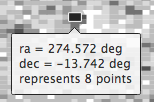
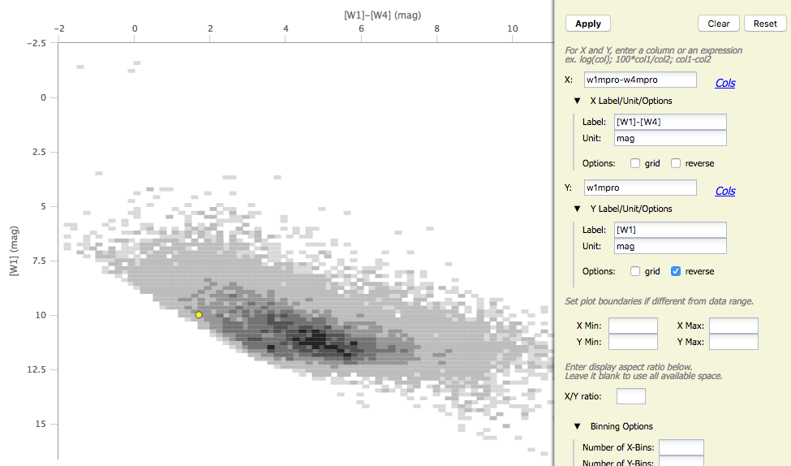
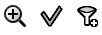

. See plotting
catalogs below.
. See plotting
catalogs below.
Contents:
+Interacting with X-Y plots
+Plotting catalogs
+Example of plotting a catalog
One of the most powerful aspects of the x-y plots is its interactivity. If you click on a source in the plot, it is highlighted in other portions of the display - perhaps overplotted on an image or highlighted in a catalog.
You can click and drag to zoom in the plot. This is called "rubber band zoom." You can also use this feature to filter the catalog that is plotted -- this is another aspect of the table filtering covered in another section.
You can change what is plotted by clicking on the gears icon: . See plotting
catalogs below.
In either case, letting your mouse hover over a point tells you the
values of the point under your cursor, and (if binned) how many points
are represented:

To change what is plotted, click on the gears icon in the upper right
of the plot window pane: .
Configuration options then appear in a pop-up. You can choose a single
column to plot against another column -- either start typing a column
name into the X and Y boxes, and it will help provide you viable
options from the column headings, or click on the "Cols" link to bring
up a pop-up with all the columns listed. NOTE THAT you must type in
the column name exactly matching the column headings as
displayed. By default, it echoes the x and y labels and units from the
original table, but you can change this by clicking on the triangles
below each entry box (e.g., make the label "SNR in WISE-1" rather than
the more cryptic column header "w1snr").
You can also do simple mathematical manipulations. For example, you
can plot w1mpro vs. w1mpro-w4mpro. Note that you can reverse the axes
such that the brighter objects are at the top of the plot.

You can add or remove the gridlines via the "Grid" checkbox.
You can also restrict what data are plotted in any of several different ways. You can set limits based on the "more options" in the plot options pop-up, or you can use a rubber band zoom, as follows. Click and drag in a sub-region of the plot. The icons in the upper left of the plot change corresponding to what you can do, in this case to these: . They are, from left to right: zoom in on the region you have selected, select the objects in the catalog, and filter the catalog to leave only those objects. If you click on the zoom icon, then the plot axes change to encompass just the sources you have selected. If you click on the select icon, then the plot symbols corresponding to your selection change shape and color, the rows (corresponding to those sources) in the catalog are highlighted in the catalog window pane, and the corresponding objects overplotted on the image in the image window pane change color. If you click on the filter icon, then the catalog view is filtered down, restricted to just those sources you have selected, and the filter notes in the upper left of the plot window (and the upper right of the catalog window) change to remind you that you have a filter applied. Only those sources that pass the filter are shown overlaid on the image(s). (This is the behavior of 'filter', as opposed to 'select'; the former restricts what is shown, the latter just highlights the objects.) For more on filters, see the filter section.
If you move your mouse over any of the points, you will get a pop-up telling you the values corresponding to the point under your cursor. If you click on any of the points, the object(s) corresponding to that point will be highlighted in the overlays in the images shown, and highlighted in the catalog table. This works the other way too - click on a row in the catalog, or an object in the images, and the object will be highlighted in the plot or the catalog or the image.
Want to save a plot to file? At this time, the best way to do that is a screen snapshot. On a Mac, this is accomplished via holding down command, then shift, then 4, then let go and your mouse cursor changes. Hit the space bar to select the window over which your mouse is hovering. Your mouse cursor changes again, and hit the mouse button. A snapshot is then saved to your Desktop, tagged with the date and time.
In a star-forming region defined for this example, we expect that the sources will be dominated by young stars. Stars without circumstellar dust should be at a variety of W1 brightnesses, but all have [W1]-[W4]~0. Background galaxies should be faint and red. Stars with circumstellar dust (e.g., young stars) should be bright and red. Here, we will make a plot, identify a bright and red object in the plot, and find where it is in the WISE images.
 ) icon in the
upper right of the plot window to make it big.
icon in the
upper left of the plot window to change what is plotted.
) icon in the
upper right of the plot window to make it big.
icon in the
upper left of the plot window to change what is plotted.